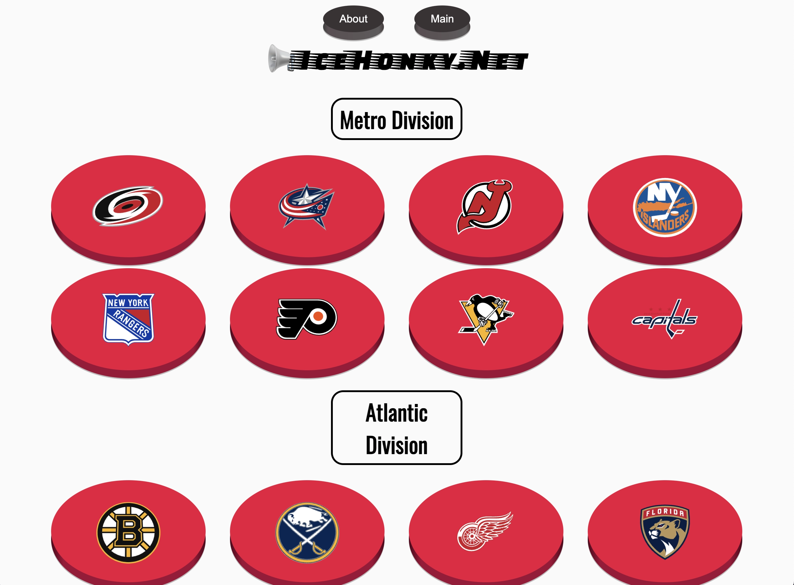
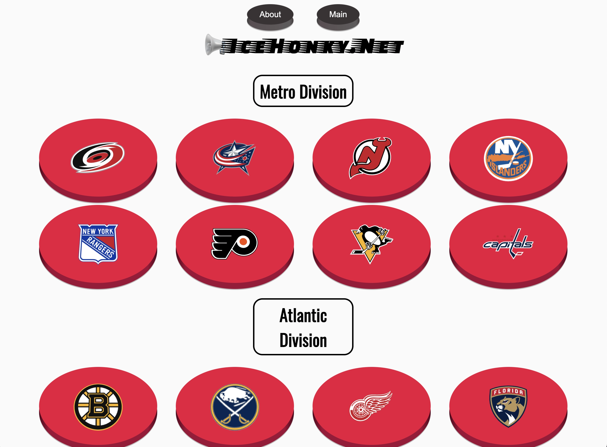

I'm a software engineer building engaging & accessible websites and apps.
Let's make something together!
I'm comfortable working with JavaScript, React.js, Ruby on Rails, SQL & PostgreSQL, Sinatra & ActiveRecord, HTML, CSS, and Git. I've used these languages and frameworks to develop & deploy Full-Stack web applications, working independently or with collaborators. You can find info and links to projects I've worked on below!
I decided to study software engineering and learn more about computer science when I noticed that my creative interests became much more computer-based since early 2020.
Around that time I started learning about electronic music and Ableton Live. My listening adventures inspired me to make music in new ways, exploring synthesis, sound design, sampling, live looping, scripting, and automation. Once I realized that I was making music by programming a computer, I started exploring other things you can do by programming computers, and I got into Software Engineering!
To develop a solid technical foundation, I completed a 15-week Software Engineering course at the Flatiron School. During my time studying at Flatiron, I studied front-end & back-end web development and I honed essential skills and habits to quickly pick up new concepts and ideas. I thrived in the fast-paced & rigorous learning environment, and I assisted & communicated with my peers in my course to ensure that we all developed a practical base of Software Engineering knowledge and skills.
I'm excited to use my technical knowledge and skills to pursue full-time work as a Software Engineer, to contribute to an exciting and supportive team of developers, and to share what I've learned to help others.
 
